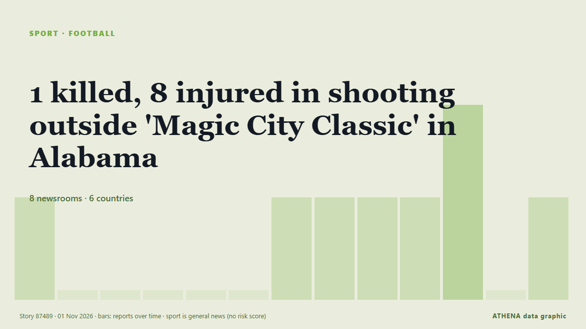

Футбол
| 20 окт. | 0 |
|---|---|
| 21 окт. | 1 |
| 22 окт. | 0 |
| 23 окт. | 2 |
| 24 окт. | 0 |
| 25 окт. | 0 |
| 26 окт. | 1 |
| 27 окт. | 4 |
| 28 окт. | 3 |
| 29 окт. | 1 |
| 30 окт. | 5 |
| 31 окт. | 5 |
| 1 нояб. | 2 |
| 2 нояб. | 0 |
Заголовки приводятся на английском языке, как они были опубликованы.

1 killed, 8 injured in shooting outside 'Magic City Classic' in Alabama
One person was killed and eight others were wounded in a mass shooting just outside Legion Field after the annual "Magic City Classic" football game, police in Birmingham, Alabama, said. из ESPN
Harry Kane misses penalty in first match since Ballon d'Or triumph
Bayern Munich striker Harry Kane has beaten Barcelona youngster Lamine Yamal and Real Madrid forward Kylian Mbappé to emerge as the best player of the 2025-2026 season in Spanish newspaper Marca's… из Vanguard
Liverpool vs Arsenal live: Premier League
Follow updates, build-up and team news from our live text commentary stream, with Martin Odegaard headlining. из Al Jazeera English
Brighton stun Man City, 10-man Man Utd beaten by Chelsea
Brighton inflicted a second straight Premier League defeat on Manchester City with a 1-0 win to close within two points of the leaders on Saturday, while Manchester United slumped to another damaging… из The Namibian
Aston Villa vs Jamie Carragher - 'Unacceptable insults', legal action and an apology
Jamie Carragher has been pushing a narrative that Unai Emery should leave Aston Villa for Manchester United if given the chance, and from there, things have escalated. из Birmingham Mail
Pressure piles on Man United’s Carrick after 2-0 defeat at Chelsea
The travelling fans applauded Michael Carrick when he strode to the corner of the Shed End at Stamford Bridge to acknowledge them but Manchester United’s former stalwart midfielder and current… из Cyprus Mail
Kenya: Ruto - Why Bayern V Ajax in Nairobi Is Perfect Tribute to Former PM Raila Odinga
[Capital FM] NAIROBI -- President William Ruto believes there could be no better way to honour former Prime Minister Raila Odinga than a blockbuster tie between Bayern Munich and Ajax at a stadium… из AllAfrica
Kane misses penalty as Bayern draw 2-2 with Dortmund
Harry Kane missed a penalty for Bayern Munich and was punished by Fabio Silva’s late equaliser as Borussia Dortmund earned a 2-2 draw in Der Klassiker. из Sky Sports
Spain win inaugural FIFA U15 World Cup
Spain won the inaugural FIFA Under-15 World Cup and Festival after defeating the Czech Republic 3-0 in Friday’s final in Baku, Azerbaijan. из Trinidad Express
Hakimi bags hat-trick as PSG thrash Le Havre 5-1
Achraf Hakimi rose to the occasion scoring a glorious hat-trick on Friday as a heavily rotated Paris Saint-Germain thumped rock-bottom Le Havre 5-1 in Ligue 1. из Vanguard
Man City beaten by Brighton as Yasin Ayari makes amends for midweek penalty miss
Ayari missed a spot-kick in Wednesday’s shoot-out defeat in the Carabao Cup against City but scored the only goal of the game on Saturday. из The Irish News (Belfast)
Arteta tells Dowman Premier League is 'not Disneyland' after ban upheld
LONDON: Arsenal manager Mikel Arteta said teenager Max Dowman must learn to cope with the demands of elite football after the winger’s red card in the League Cup defeat at fourth-tier Fleetwood Town… из New Straits Times
Michael Carrick confirms Bruno Fernandes will remain Manchester United captain
Manchester United captain Bruno Fernandes turned on head coach Michael Carrick after one of the club's most humiliating nights in European history. из MyJoyOnline
England heading out of the World Cup despite beating Papua New Guinea
The story of England’s World Cup exit - despite their win over Papua New Guinea. из Yorkshire Post
Azerbaijan to face Afghanistan in final match at FIFA U-15 World Cup in Baku
Azerbaijan will play its final match at the FIFA U-15 World Cup and Festival, being held in Baku, today. из AzerNews
Africa Cup of Nations to maintain 2-year cycle after CAF U-turn
The Africa Cup of Nations will maintain its two-year cycle after a U-turn from the Confederation of African Football. из Africanews (English)
Everton beat Newcastle 3-1 to reach League Cup quarter-finals
Chasing their first League Cup final appearance in 43 years, Everton will travel to fourth-tier minnows Fleetwood in the week commencing December 14. из Vanguard
Mbappe apologises for Mao joke after brands drop him
Kylian Mbappe has apologised for his "ill-judged" comment about former Chinese leader Mao Zedong, which has led to Chinese brands dropping the Real Madrid forward. из RTÉ News
Michael Carrick ‘not surprised’ to still be in Manchester United role
AFC Bournemouth visit Old Trafford on Sunday buoyed by a European win against seven-time continental champions AC Milan. из The National